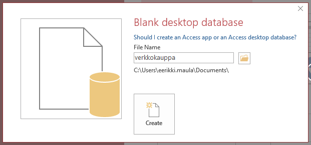
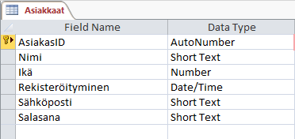
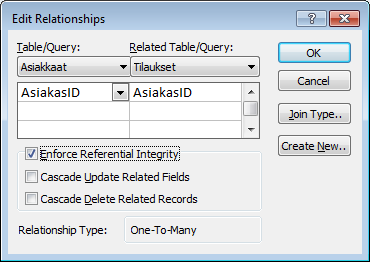
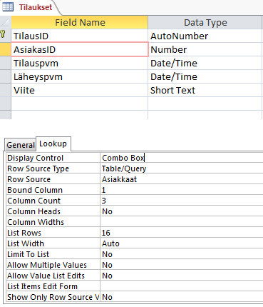
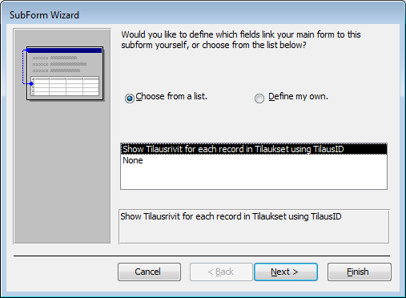
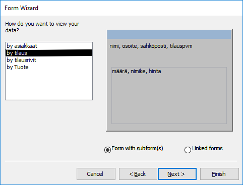

Verkkokaupan tietokanta (II)
Tämä tehtävä perustuu jo suunniteltuun ja tehtyyn verkkokaupan tietokantaan.
- Kopioi tietokantasi rakenne (DatabaseModel Diagram) ja kenttämääritykset sekä viite-eheysmääritykset uuteen Word-tiedostoon (tai pdf). Oma nimi mukaan ylätunnisteelle.
- Lähetä suunnitelmasi henkilölle, jonka nimi selviää tuota pikaa (lista).
- Tutki saamaasi suunnitelmaa ja kirjoita Wordilla muistio siitä, mitä asioita suunnitelmassa
- ihmettelet
- pidät erityisen hyvänä
- jos löydät suoranaisia virheitä, korjaa ne perustellusti, mutta kirjoita nekin muistiin (eli missä vika, miksi korjasit ja miten).
- Esimerkki muistiosta
- Muistion voit tässä vaiheessa lähettää suunnitelman tekijälle tiedoksi.
- Toteuta saamasi tietokantasuunnitelma MS Access-tietokantana
- Syötä muutama tietue tietokantaan ikään kuin testausmielessä.
- Laadi tilauksista pää-alilomake jonka avulla voi selata tilauksia asiakkaittain.
- Laadi tilausraportti (tilaukset, tilausrivit, tuotteiden nimi ja hinta, asiakkaiden nimet).
- Palauta tietokanta, jossa on mukana em. lomake ja raportti, zipattuna sähköpostilla ja palauta samalla opiskelutoveriltasi saamasi tietokantasuunnitelma sekä sen arviointi, jonka teit tehtäväkohdan 3 aikana (muista laittaa nimesi näkyviin).
MS Access-kertausta
Tyhjä tietokanta
Kun aloitat uuden työn niin tarkista mihin tiedosto luodaan! Oletuksena C-asemalla, vaihda tämä K-asemalle!

Taulujen luonti
Taulut kannattaa tehdä Design-näkymässä (Create / Table Design). Pääavain mielellään Autonumber ja muista tälle Primary Key

Yhteydet
- Database tools / Relationships
- Muista asettaa Referential Integrity!

Taulun lookup-haku
- Kun yhteydet ovat kunnossa voit määritellä taulun vierasavaimille haun (lookup) jotta tietojen lisääminen tapahtuisi helpommin.
- Taulun suunnittelunäkymä (Design View), valitse kenttä ja siirry Lookup-välilehdelle

- Row Source: taulu josta tämän kentän tietoja haetaan
- Column Count: montako saraketta näytetään
Alilomakkeen tekeminen
- tee ensin lomake (form) tilaukset-taulustasi
- tämän jälkeen raahaa tilausrivit-taulukko lomakkeelle Design-näkymässä

Raporttien toiminnot
- Tilausraportin tiedot haetaan monesta eri taulusta - tarvitset kyselyn (Query) tämän raportin tietolähteeksi. Tee siis 1. uusi kysely jossa halutut lähdetiedot ja 2. tämän jälkeen uusi raportti (Report) jonka tietolähteeksi valitset äsken tekemäsi kyselyn.
- Tee raportti ohjatun toiminnon avulla, valitse tietolähteeksi kyselysi ja katso tietoja "tilauksittain":

- Lisää raportille välisummat Design-näkymässä Totals-toiminnon avulla